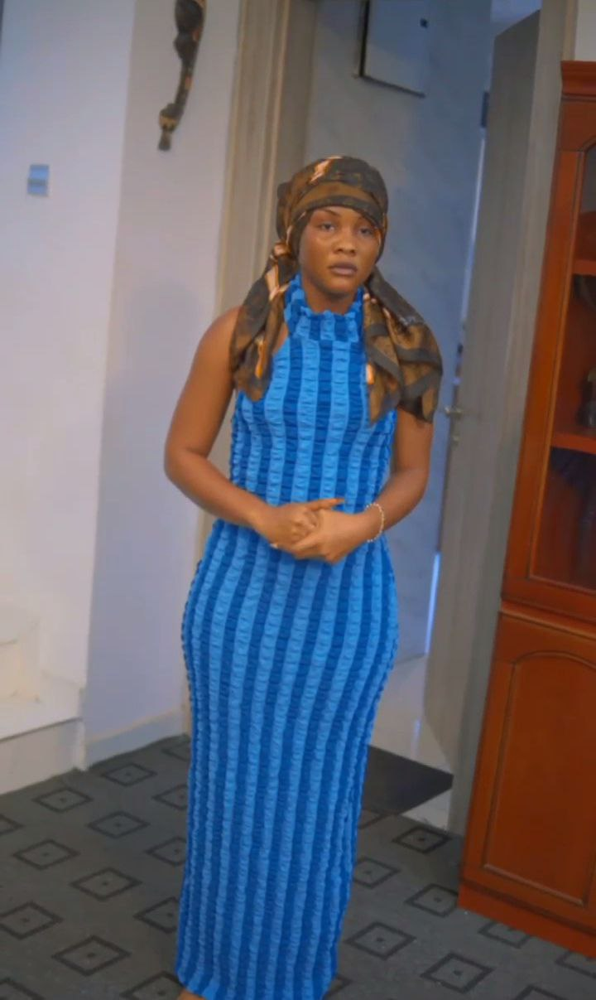
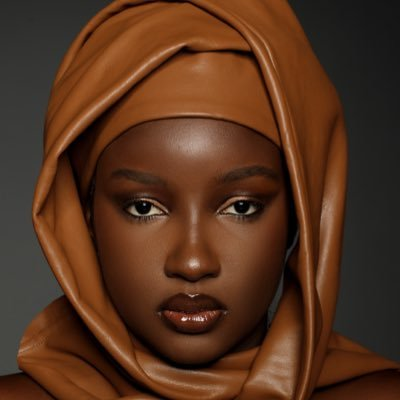
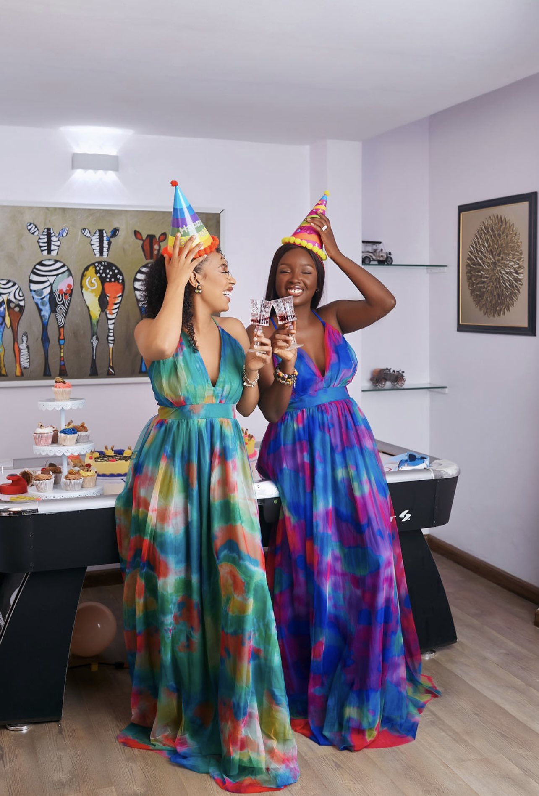
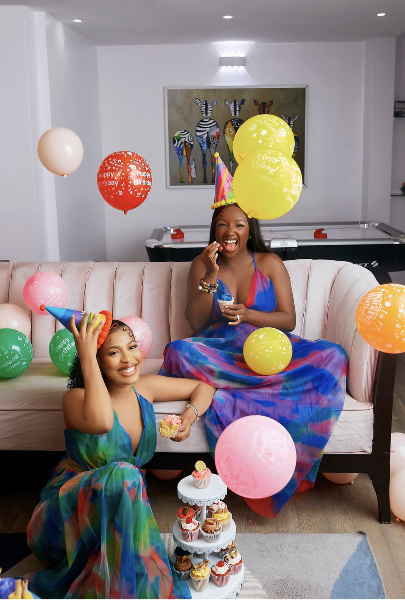
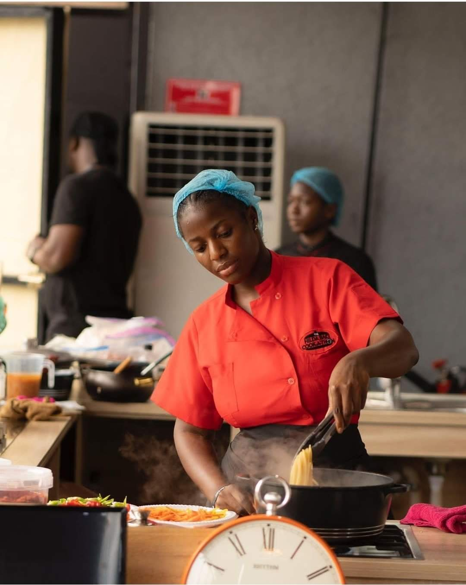

Adex
@peladexn • 22h
Dem no fit catch my guy 🤣🤣
A very short story
Checkout the video thread 👇
A very short story
Checkout the video thread 👇

35
250.5K
Show this thread

Saskay
@OfficialSaskay • 15h
Double the giggles
Double the grins
Double the celebration!!!
Happy Birthday to us sweet girls
All sweetness courtesy of @fastestCakes
Double the grins
Double the celebration!!!
Happy Birthday to us sweet girls
All sweetness courtesy of @fastestCakes


232
212.3K

Peter Obi 
@PeterObi • May 14
The efforts being made by Hilda Effiong Bassey (Hilda Baci) to beat the current
Guinness World Record for cooking for 4 days nonstop shows the
true Nigerian spirit of hardwork and resilience.

35
250.5K
Peter Obi
@PeterObi • May 14
I applaud her determination and focus on the goal, which is inspiring many Nigerian youths to
live their dreams through hardwork and dedication.
I wish her well on this noble journey to pen her name in the golden book of history. -PO
I wish her well on this noble journey to pen her name in the golden book of history. -PO
UG
@UgwunnaEjikem • Feb 7
Amala & ewedu is food fit for prisoners.
Pharaoh👳🏾♂️👑
@MrMekzy_ • Feb 7
What is your unpopular opinion about a food that would put you in this situation?
96
81.7K